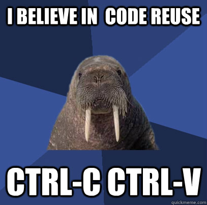

so, you want to go open science?
Antoine Masson, Vittoria Rezzonico
December 4th 2018
who are you?
who are we?
SCITAS
the Library
why us?
so, you want to go open science?
Welcome!

Thomas
thomas@macbook:~♥ gfortran fe-code.f90
thomas@macbook:~♥ ./a.out
-511217312.
thomas@macbook:~♥ ./a.out
320487776.
Oops
What Thomas did not do
thomas@macbook:~♥ gfortran -fbounds-check fe-code.f90
thomas@macbook:~♥ ./a.out
At line 9 of file fe-code.f90
Fortran runtime error: Index '0' of dimension 1 of array 'a' below
lower bound of 1
Error termination. Backtrace:
#0 0x7fb554834d4a
#1 0x7fb554835825
#2 0x7fb554835bca
#3 0x561f9eb609cb
#4 0x561f9eb60ac4
#5 0x7fb553d402e0
#6 0x561f9eb607f9
#7 0xffffffffffffffff
Quiz
What is wrong with the code?
- no versioning
- it’s not GPL
- insufficient debugging
- insufficient testing
Quiz
What can go wrong with the science?
Quiz
What can we suggest to Thomas?
Consider the paper like an advertisement for your work. Scholarship is in code and data.
Goal number 1
Goal number 1
Goal number 2
build on the shoulder of giants
Goal number 3
be the giant

Don’ts
Messy code
Useless comments
Errors
thomas@macbook:~♥ rm -rf ~/
code/software loss

irreversible mistakes
isolated code/software
ignored contribution as a developer

code reinvention or duplication of experimental runs over and over
Let’s be positive
And do things well
File management
efficient
time saving
Documentation
reusable
by yourself, your colleagues, the world
Versioning
safe
reliable
citable
Reappropriation
Collaboration
Acknowledgement
Build your code portfolio
Open Science
umbrella term
movement
sharing results and methodologies
at all stages
open access to publications
open research data
open source software
open collaboration
open peer review
Why?
Because we’re nice people
Public money, public data
Requirement
from the funding agencies
Open Science is good for you
Visibility
larger impact
Scrutiny
better quality
Reuse
higher efficacy
Public access
fair opportunity
Science is supposed to be Open!
Open Source
something you can modify and share
publicly accessible design
software with source code that anyone can
inspect, modify, and enhance
Free software
Logiciel libre
Free as in freedom
The four essential freedoms
Freedom #0
run the program as you wish, for any purpose
Freedom #1
study how the program works,
and change it so it does your computing as you wish
Comments to Freedom #1
Need access to the source code
Freedom #2
redistribute copies so you can help others
Freedom #3
distribute copies of your modified versions to others
Comments to Freedom #3
the whole community can benefit from your changes
need access to the source code
Open Source? Free?
values
Free and Open Source licenses
Not including a license?
doesn’t mean your code is open
A license must be provided
to define what is allowed to do with your work
citation
usage
sharing
A license must be provided
to protect your work
Using external libraries
check their licenses
Open Format
goal: reuse the software and the generated data
Dos
- use open file standard
- custom format? give the format used!
Dos
- use open language, libraries
- other can install and use and contribute to your code
Caveats
- some proprietary software do not allow distribution of the output files
- read the license agreement, or take advantage of the work done by VPSI
https://support.epfl.ch/epfl?id=epfl_eula_conditions
Confidentiality and publishing
can we publish everything?
Confidentiality and publishing
- agreement of all the authors
- anonymize attached data (passwords!)
- licenses changes are HARD! talk to the EPFL TTO
- publish data and code once paper is out
Summary
Things are changing
Before
unfair dissemination
knowledge as object of trade
Before
irreproducibility
sloppy science
bad press
Before
paper is out
science already old
Before
scholarship beyond publication
is considered irrelevant
Before

Before

After
entire research process
transparent and accessible
After
increase cooperation and efficiency
therefore impact
After
change in the way
scholarly knowledge
is produced, evaluated and disseminated
After
ownership
back to
the scientific community
After
knowledge transfer from academia to society
is facilitated
more trust!
After